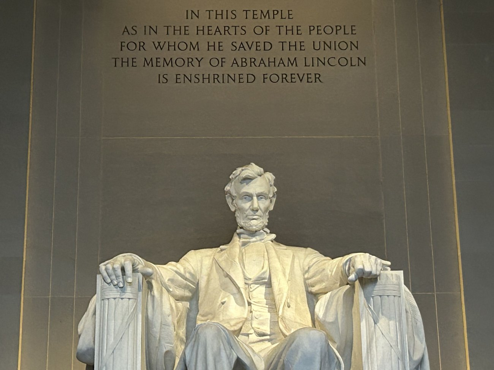
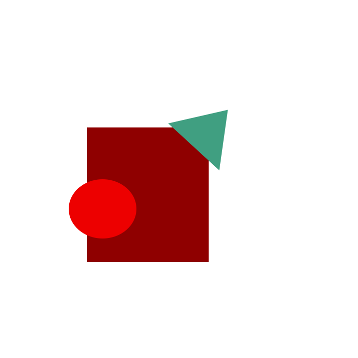

Introduction
Hello my name is Owen Gregson; I am a visual arts student who enjoys exploring both digital and traditional mediums. Working toward building a strong, professional portfolio as I prepare to transfer to Grand Canyon University Online to major in Art Video Game Design. This will further help my original concepts for games and narrative focused projects.
Additional Information
Whether it’s through concept art, or graphic design. I want people to know that I’m dedicated, curious, and always willing to learn new skills to improve my craft. For potential employers or clients, I want them to see that I am reliable, organized, and able to adapt to different styles and project needs. For collaborators, I bring creativity, communication, and always open to others ideas. My goal is to grow as an artist, expand my technical abilities, and eventually work in a creative field where I can design, tell my stories, and contribute meaningful visual work.
- Good at developing ideas
- Refining details & organization
- Building worlds & characters that feel alive.

